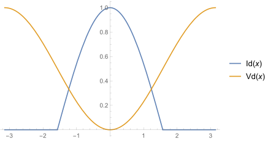
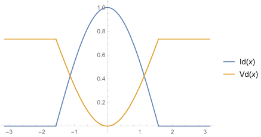
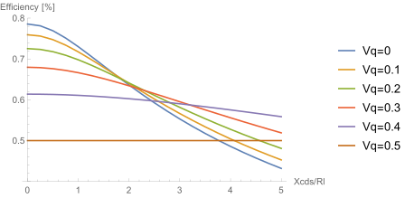
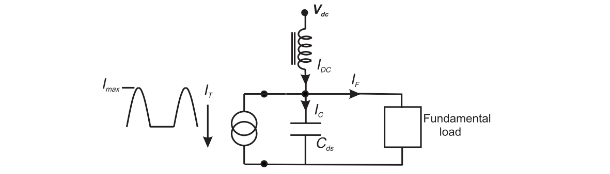
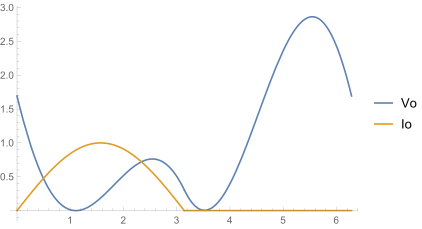
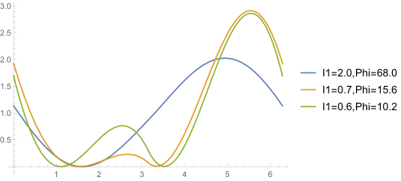

Class J Power Amplifier
This article includes a brief introduction to the class J PA.
Harmonic Short Termination
Equal Harmonic Termination
In the analysis from class A to class C PA, it is assumed the load can provide a short at higher harmonics. If this assumption cannot hold, the efficiency of the power amplifier will reduce. The waveform in the following figure is a class B PA with harmonic short. Ideally, it can achieve a drain efficiency of $\pi/4$ , or approximately 78.5%.

In the figure, current is normalized to $I_{max}$, while voltage is normalized to $2V_{dd}$.
For a class B PA with the same impedance across all harmonics, it should assume a waveform as follows. When the load impedance is modified so as to make voltage average equal to $V_{dd}$, it has an efficiency of $\pi^2/(8-8\pi)$, or approximately 57.6%.

Therefore, without harmonic short, the efficiency of traditional PA is greatly reduced.
The output capacitance of the device $C_{ds}$ reduces the load impedance at high frequency, and thus can be considered as a approximation to ideal harmonic termination. Following this method, the reactance of the capacitor should be as low as possible. The metric $X_{C_{ds}}/R_L$ at the fundamental is defined to assess the approximation. If $X_{C_{ds}}/R_L\ll1$, the classic result can be expected. However, even if $X_{C_{ds}}/R_L>1$, with a substantial reactive component, the efficiency can be restored or even enhanced. This technique is called class J PA.
Capacitive Harmonic Termination
Due to the influence of $C_{ds}$, the voltage waveform is
Addition of the second harmonic would increase peak-to-peak range. If the peak voltage is kept the same, the fundamental component is reduced, thereby reducing the efficiency.
As shown in the figure below, a high $X_{C_{ds}}$ would lower the fundamental voltage, thereby reducing the efficiency achievable. On the other hand, however, a low $X_{C_{ds}}$ would increase the quality factor of the output node, and thus reducing the output bandwidth.

1 | result = {}; |
Class J Power Amplifier
The class J power amplifier differs from classic amplifiers in that:
- The load is not purely resistive at the fundamental frequency
- The load presents high impedances at higher harmonics
- The output capacitance is used to provide a specific reactive termination at the second harmonic, generating a non-sinusoidal waveform.

In the analysis, the transistor is assumed to be a current generator. In class B condition, it has a current of
The fundamental current flowing in the matching branch has the form
And thus the current flowing through the capacitor is
Thus, the voltage can be obtained through integration
where $V_{off}$ is an arbitrary offset to make $V_o(\theta)\ge0$, and $1/\omega C$ is adjusted to make the average of $V_o(\theta)$ equal to $V_{dd}$.
For instance, for $I_1=0.6,\phi=10.2^\circ$, calculated results are
1 | Xcds (1/wC) = 7.69585 |

In the figure, current is normalized to $I_{max}$, while voltage is normalized to $V_{dd}$.
1 | (*define the current and the voltage waveform*) |
Similarly, the analysis can be performed for several other occasions.
| No. | I1 | Phi | Xcds/Rl | Prf | Eff | R1 | X1 |
|---|---|---|---|---|---|---|---|
| 1 | 2.0 | 112 | 0.27 | 0 | 78.5 | 1.0 | 0.13 |
| 2 | 0.7 | 164.4 | 2.65 | 0 | 78.5 | 1.0 | 0.92 |
| 3 | 0.6 | 10.2 | 3.82 | -0.9 | 63.9 | 0.82 | 0.69 |

The key class J design maneuver is to shift the phasing of the voltage and current waveforms, without changing their shape, such that the second harmonic voltage and current components are in phase quadrature.
- Post link: https://triblemany.github.io/archives/74ab8a26/class-j-power-amplifier.html
- Copyright Notice: All articles in this blog are licensed under BY-NC-SA unless stating additionally.